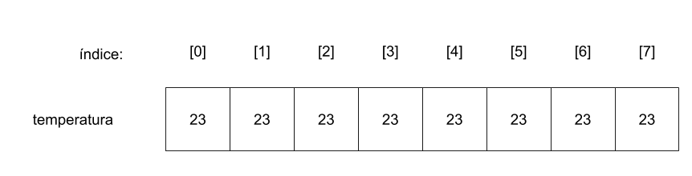

Lógica de Programação
Arranjos: vetores e matrizes
Prof. Marco Antonio Andrade
Sumário
- Vetores
- Matrizes
Vetores
É um conjunto de elementos de dados de mesmo tipo que pode ser acessado por meio de índices (PUGA & RISSETI, 2016).
Declaração de um vetor
cadeia nomes[5]
inteiro idades[6]
O vetor nomes poderá recebar 5 valores, do tipo cadeia, em cada uma de suas posições: 0, 1, 2, 3 e 4.
Atribuição de valores a um vetor
nomes[0] = "Maria a Silva"
nomes[1] = "José da Silva"
escreva(nomes[0])
Percorrendo um vetor
para (inteiro i = 0; i < 5; i++){
escreva(nomes[i])
}
Matriz
É um conjunto de elementos de dados de mesmo tipo que pode ser acessado por meio de mais de um índice (PUGA & RISSETI, 2016).

Declaração de uma matriz
real produtos[2][3]
Declaração de uma matriz com 2 linhas e 3 colunas para representar a variação de preco de um produto em vários mercados
Atribuindo valores a uma matriz
produtos[0][0] = 23.00
produtos[0][1] = 24.00
produtos[0][2] = 22.50
produtos[1][0] = 12.30
produtos[1][1] = 12.50
produtos[1][2] = 13.00
Percorrendo uma matriz
para (inteiro linha = 0; linha < 2; linha++){
para (inteiro coluna = 0; coluna < 3; coluna++){
escreva(produtos[linha][coluna])
}
}
Precisamos percorrer cada linha, e em cada linha percorrer cada coluna da matriz.